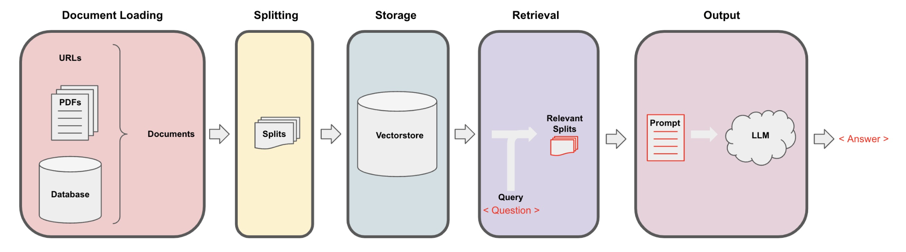
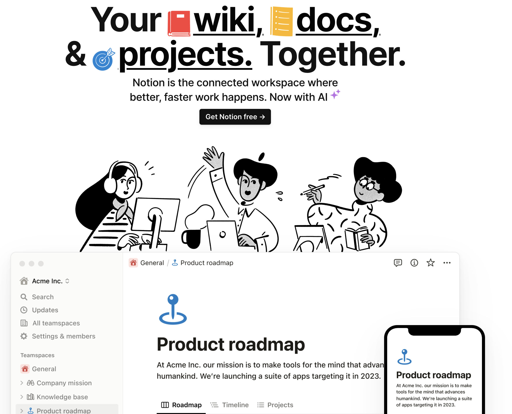

from langchain.document_loaders import NotionDirectoryLoader
from langchain.document_loaders import WebBaseLoader
import pandas as pd
from langchain.document_loaders.blob_loaders.youtube_audio import YoutubeAudioLoader
from langchain.document_loaders.parsers import OpenAIWhisperParser
from langchain.document_loaders.generic import GenericLoader
from langchain.document_loaders import PyPDFLoader
from dotenv import load_dotenv, find_dotenv
import os
import openai
# import sys
# sys.path.append('../..')
_ = load_dotenv(find_dotenv()) # read local .env file
openai.api_key = os.environ['OPENAI_API_KEY']Document Loading
Learn the fundamentals of data loading and discover over 80 unique loaders LangChain provides to access diverse data sources, including audio and video.
Setup
Python
Retrieval Augmented Generation (RAG)
Basics
In retrieval augmented generation (RAG), an LLM retrieves contextual documents from an external dataset as part of its execution.
This is useful if we want to ask question about specific documents (e.g., our PDFs, a set of videos, etc).

Example
Let’s load a PDF transcript from one of Andrew Ng’s courses
These documents are the result of automated transcription so words and sentences are sometimes split unexpectedly.
Load PDF
loader = PyPDFLoader("../docs/cs229_lectures/MachineLearning-Lecture01.pdf")
pages = loader.load()Each page is a
Document.A
Documentcontains text (page_content) andmetadata.
Inspect data
len(pages)- 22
page = pages[0]page.metadata- {‘source’: ‘../docs/cs229_lectures/MachineLearning-Lecture01.pdf’, ‘page’: 0}
Inspect content
print(page.page_content[0:500])- MachineLearning-Lecture01
Instructor (Andrew Ng): Okay. Good morning. Welcome to CS229, the machine learning class. So what I wanna do today is ju st spend a little time going over the logistics of the class, and then we’ll start to talk a bit about machine learning.
By way of introduction, my name’s Andrew Ng and I’ll be instru ctor for this class. And so I personally work in machine learning, and I’ ve worked on it for about 15 years now, and I actually think that machine learning i
YouTube
Prerequisites
You need FFmpeg
Example
Let’s load the “Code Report” about Vector databases from Fireship
Load YouTube video
# link to video
url = "https://www.youtube.com/watch?v=klTvEwg3oJ4"
# path to directory
save_dir = "../docs/youtube/"
# load video
loader = GenericLoader(
YoutubeAudioLoader([url], save_dir),
OpenAIWhisperParser()
)
docs = loader.load()Inspect data
docs[0].page_content[0:500]- “It is April 7th, 2023, and you’re watching The Code Report. One month ago, Vector Database Weaviate landed $16 million in Series A funding. Last week, PineconeDB just got a check for $28 million at a $700 million valuation. And yesterday, Chroma, an open source project with only 1.2 GitHub stars, raised $18 million for its Embeddings database. And I just launched my own Vector database this morning. We’re currently pre-revenue, pre-vision, and pre-code, and valued at $420 million. Leave your cre”
Save data
df = pd.DataFrame(docs, columns=['Text', 'Metadata'])df.to_csv('../docs/youtube/codereport.csv')URLs
Example
Let’s load a page from “Introduction to Modern Statistics” by Mine Çetinkaya-Rundel and Johanna Hardin: https://openintro-ims.netlify.app/data-design
The raw file is provided in GutHub under this URL: https://raw.githubusercontent.com/OpenIntroStat/ims/main/02-data-design.qmd
Load URL
loader = WebBaseLoader(
"https://raw.githubusercontent.com/OpenIntroStat/ims/main/02-data-design.qmd")
docs = loader.load()Inspact data
print(docs[0].page_content[400:800])- ampling. Knowing how the observational units were selected from a larger entity will allow for generalizations back to the population from which the data were randomly selected. Additionally, by understanding the structure of the study, causal relationships can be separated from those relationships which are only associated. A good question to ask oneself before working with the data at all is, “H
Save data
df = pd.DataFrame(docs, columns=['Text', 'Metadata'])df.to_csv('../docs/url/study-design.csv')Notion

Example
Option 1: Simply use the example data provided in
langchain-intro/docs/Notion_DBOption 2: Follow the steps here for an example Notion site such as this one
- Duplicate the page into your own Notion space and export as
Markdown / CSV. - Unzip it and save it as a folder that contains the markdown file for the Notion page.
- Duplicate the page into your own Notion space and export as
Load Notion
loader = NotionDirectoryLoader("../docs/Notion_DB")
docs = loader.load()Inspect data
print(docs[0].page_content[0:200])# Getting Started
👋 Welcome to Notion!
Here are the basics:
- [ ] Click anywhere and just start typing
- [ ] Hit `/` to see all the types of content you can add - headers, videos, sub pages, etc.Inspect data
docs[0].metadata